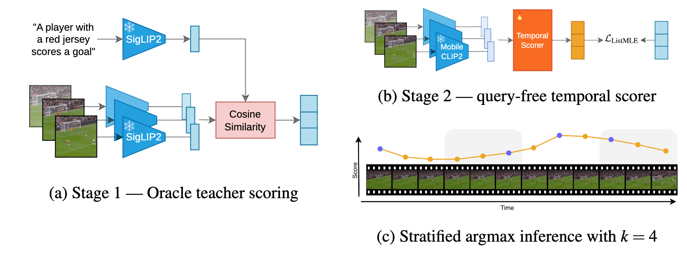
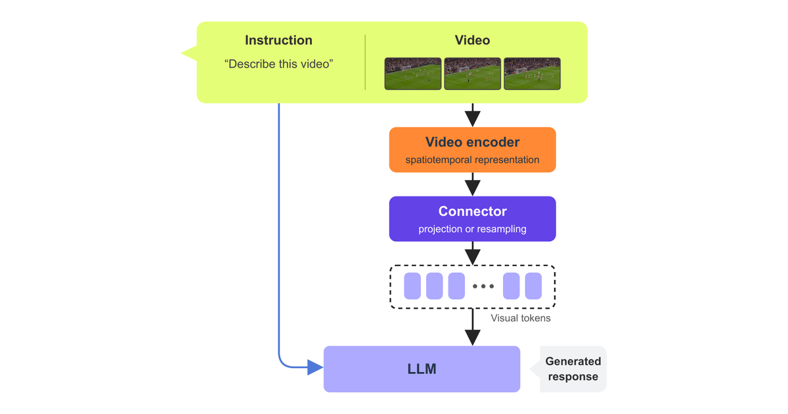

Killian
Steunou
Hi! I'm a PhD student in machine learning at Institut Polytechnique de Paris and
Moments Lab, and these days I'm trying to find ways for models to understand
the world through video. For me that means omni-modal models that see and hear at the same time, run efficiently, and
keep working on footage that looks nothing like their training data. So far it has led to a way of picking the frames
that matter [3]  
Before the PhD, I studied maths and statistics at Toulouse School of Economics and then did the MVA master at ENS Paris-Saclay, with research internships at Idemia, CLS and JoliBrain along the way. I care about open code and results that other people can reproduce.
News
Our survey Why Is Video Still So Expensive? is on arXiv! It sorts 125 inference-efficiency methods for video and audiovisual LLMs by the pipeline stage where they cut cost, and comes with a companion repository.
PEEK was accepted at BMVC 2026 and the camera-ready version is on arXiv. See you in Lancaster in November!
The PEEK preprint is out, with code, weights and a demo you can try in the browser.
Blog post: a visual guide to captioning metrics, from n-grams to CIDEr.
Blog post: Efficiency follows capability, ten years of video understanding papers mined from arXiv.
older
Started my industrial PhD between Institut Polytechnique de Paris and Moments Lab.
Preprint: Sparse representations improve adversarial robustness of neural network classifiers, with Théo Druilhe and Sigurd Saue.
Joined Idemia as a research intern, working on SAM 2 for multi-object tracking.
Finished the MVA master at ENS Paris-Saclay.
Publications
Background
Work
- 2025–
Efficient omni-modal learning for video understanding.
- 2025
SAM 2 for end-to-end multi-object tracking.
- 2024
Fine-tuning foundation models on remote sensing data.
- 2023
ControlNet-style controls and zero-shot detection in joliGEN.
- 2022
Developer intern, Ministry of Agriculture
agreste, an R package for statistical publications.
Education
- 2025–
PhD in machine learning, Institut Polytechnique de Paris
- 2024–25
Master MVA, ENS Paris-Saclay
Optimal transport, convex optimization, generative models.
- 2023–24
M1 applied maths and statistics, Toulouse School of Economics
- 2022–23
Exchange semester, University of Copenhagen
- 2019–22
Bachelor in maths and economics, Toulouse School of Economics
Projects
Video background removal
Removes the background of a whole video with Mobile SAM.
codedemojoliGEN
Contributed edge controls and SAM-based masking to JoliBrain's generative toolkit.
codeVideo object detection
Zero-shot detection in videos with OWL-ViT and text prompts.
codeNail bite detection
A macOS menu-bar app that notices nail biting through the webcam.
codesiteAudio-visual transcription
Subtitles for audio and video files with Whisper.
codedemoMathViz
Interactive visualisations of maths, statistics and ML ideas.
codedemo
coursework reports
Score-based generative networks for large-scale optimal transport
SCONES reproduction.
reportcodeOnline test-time training with masked autoencoders
TTT-MAE extension.
reportcodeAn end-to-end transformer for 3D object detection
3DETR reproduction.
reportAre generative classifiers more robust to adversarial attacks?
Adversarial robustness.
reportcodeToxic gas characterisation under humidity shift
Multi-task learning and adversarial domain adaptation.
reportcodeConvergence of SGD with sliced Wasserstein losses
Optimisation for generative modelling.
reportcode
Writing
NLP metrics for image and video captioning: a visual guide
BLEU, ROUGE-L, METEOR and CIDEr, worked through on examples.
Efficiency follows capability
How efficiency moved to the centre of video understanding research, 2015 to 2025.
Contact
I'm always happy to talk about efficient video models, multimodal learning, evaluation, or a possible collaboration.